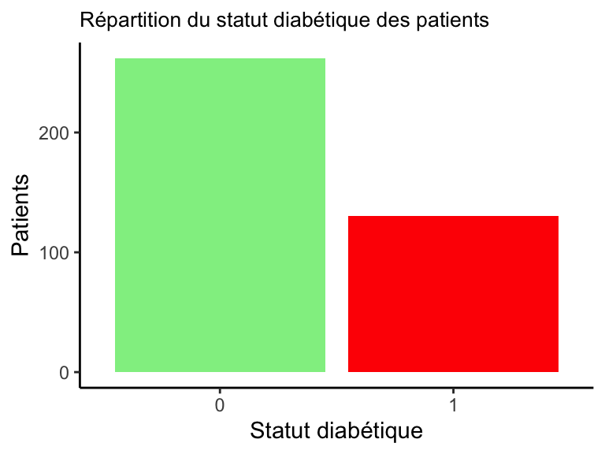
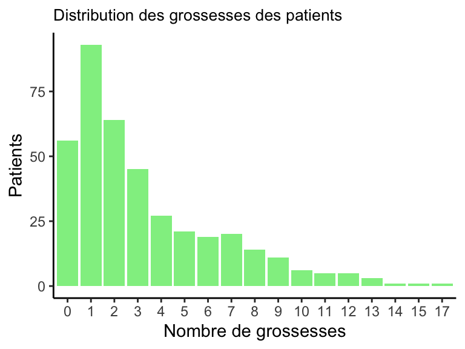
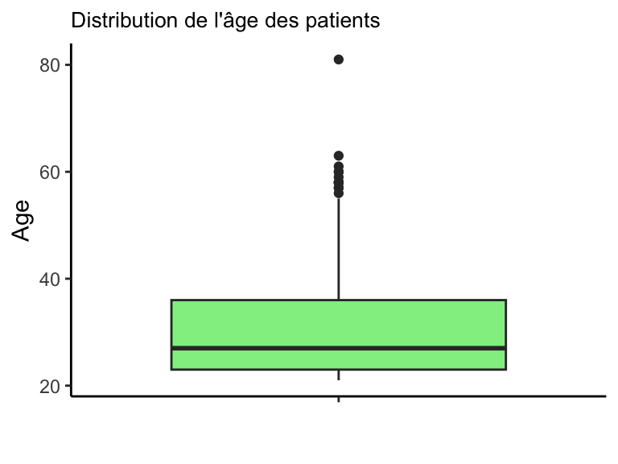
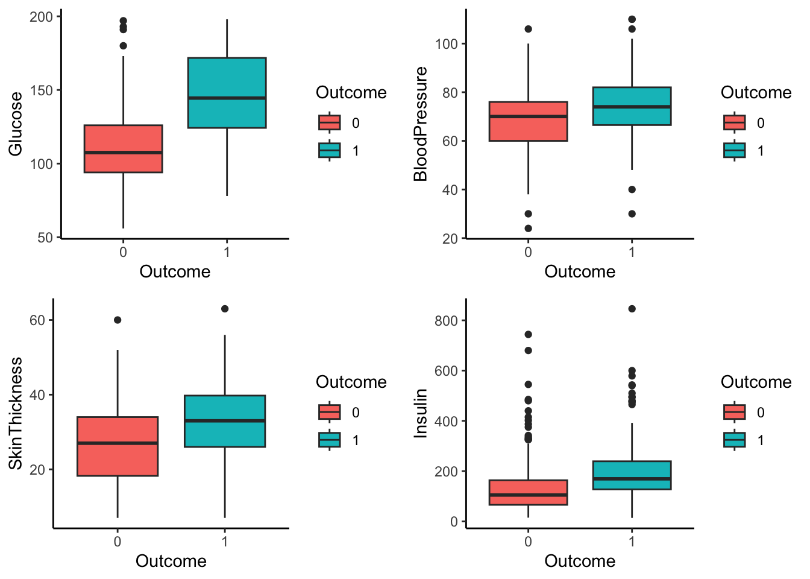
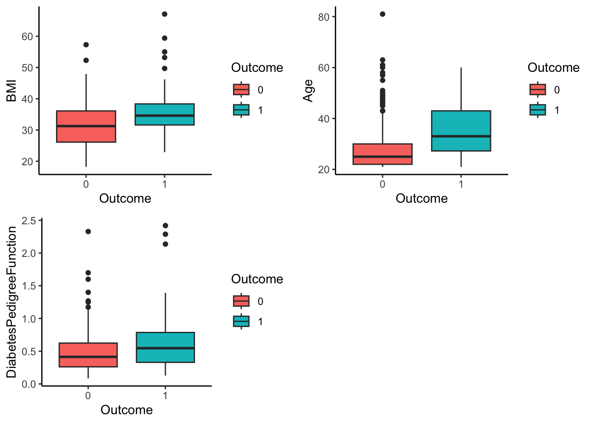
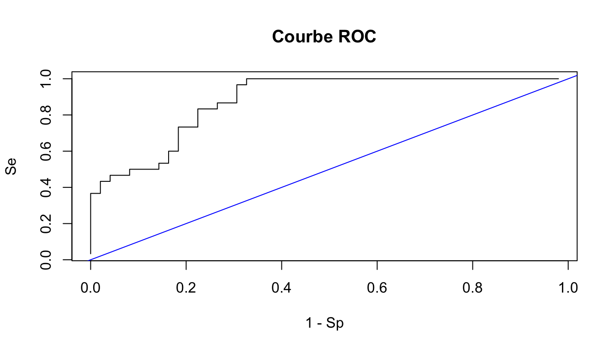

# Import library ---------------
library(ggplot2)
library(gridExtra)
library(class)
# Import data ---------------
diabetes <- read.csv("data_blog/diabetes.csv")
diabetes$Outcome <- as.factor(diabetes$Outcome)Régression logistique en pratique
R
Machine learning
Application d’un modèle de régression logistique pour prédire si un patient est atteint de diabète. Le modèle est également comparé à la méthode des \(k\) plus proches voisins.
Introduction
Ce billet de blog a pour objectif d’étudier le modèle de régression logistique et de le comparer ainsi à la méthode des \(k\) plus proches voisins. Ces deux méthodes sont des algorithmes d’apprentissage supervisé. Le but de l’apprentissage supervisé est de prévoir l’étiquette (classification) \(Y\) ou la valeur de \(Y\) (régression) associée à une nouvelle entrée \(X\), où il est sous-entendu que (\(X,Y\)) est une nouvelle réalisation des données, indépendante de l’échantillon observé.
La régression logistique est une méthode de classification. Ce modèle de classification binaire permet d’expliquer une variable (\(Y\)) par p variables explicatives (\(X_1,...,X_j\). La variable \(Y\) ne peut prendre que deux modalités \(\left\{0 ;1\right\}\). Les variables \(X_j\) sont exclusivement continues ou binaires (on re-code les variables qualitatives avec des 0 et 1).
L’algorithme des \(k\) plus proches voisins fonctionne de la façon suivante pour la classification. On détermine les \(k\) plus proches \(X_i\) de l’échantillon par rapport à \(X\) et on attribue la modalité dominante parmi les \(k\) modalités observées (on parle de vote majoritaire).
Nous allons utiliser ces deux méthodes de classification afin de prédire, en se basant sur des mesures diagnostiques, si un patient est atteint du diabète ou non.
Import et préparation des données
Dans un premier temps, nous importons le jeu de données “diabetes.csv”. Nous allons mettre en pratique nos méthodes de régression logistique et \(k\) plus proches voisins sur ce dernier. Ce jeu de données est issu de l’Institut national du diabète et des maladies digestives et rénales. Tous les patients ici sont des femmes d’au moins 21 ans d’origine Pima. Il contient les mesures suivantes.
| Variable | Description | Type |
|---|---|---|
| Pregnancies | Nombre de grossesses | Quanti continue |
| Glucose | Concentration de glucose plasmatique | Quanti discrète |
| BloodPressure | Pression artérielle diastolique (mm Hg) | Quanti discrète |
| SkinThickness | Épaisseur du pli cutané du triceps (mm) | Quanti discrète |
| Insulin | Insuline sérique à 2 heures (mu U/ml) | Quanti discrète |
| BMI | Indice de masse corporelle (poids en kg / (taille en m)²) | Quanti continue |
| DiabetesPedigree | Fonction de prédisposition au diabète | Quanti continue |
| Age | Âge (années) | Quanti discrète |
| Outcome | Statut diabétique (oui ou non) | Quanti discrète |
Nous avons en même temps importé 3 packages qui nous seront utiles dans la réalisation de notre travail. À savoir, ggplot pour la réalisation de graphique, et class pour la classification de l’algorithme des \(k\) plus proches voisins.
Voici un petit aperçu de nos données.
head(diabetes) Pregnancies Glucose BloodPressure SkinThickness Insulin BMI
1 6 148 72 35 0 33.6
2 1 85 66 29 0 26.6
3 8 183 64 0 0 23.3
4 1 89 66 23 94 28.1
5 0 137 40 35 168 43.1
6 5 116 74 0 0 25.6
DiabetesPedigreeFunction Age Outcome
1 0.627 50 1
2 0.351 31 0
3 0.672 32 1
4 0.167 21 0
5 2.288 33 1
6 0.201 30 0Notre jeu de données ne présente pas de valeurs manquantes (NA), mais contient des observations pour lesquelles la valeur est égale à 0. Nous considérerons ces valeurs comme manquantes et les supprimons. Nous faisons cela uniquement sur 5 variables pour qui l’on juge que la valeur 0 est une vraie donnée manquante. Par exemple, nous ne le faisons pas pour la variable Pregnancies pour qui le 0 veut tout simplement dire que la personne n’a jamais été enceinte. Nous conservons alors 392 individus sur les 768 initiaux.
# Suppression des 0
diabetes <- diabetes[diabetes$SkinThickness!=0,]
diabetes <- diabetes[diabetes$Insulin!=0,]
diabetes <- diabetes[diabetes$Glucose!=0,]
diabetes <- diabetes[diabetes$BloodPressure!=0,]
diabetes <- diabetes[diabetes$BMI!=0,] Cette suppression à pour objectif de ne pas fausser les relations que nous cherchons à modéliser. Par exemple, avoir une insuline à 0 n’est premièrement pas cohérent et peut influencer de manière disproportionnée le modèle, car les autres observations sont éloignées. En somme, nous essayons de garantir que le modèle représente fidèlement la relation entre les variables.
Statistique descriptive
À présent, nous allons étudier nos données de manière descriptive afin d’en obtenir un aperçu et ainsi de visualiser la répartition de la variable \(Y\) (Outcome). De plus, nous analyserons les corrélations entre les co-variables elles-mêmes, ainsi qu’entre celles-ci et la variable \(Y\).
summary(diabetes) Pregnancies Glucose BloodPressure SkinThickness
Min. : 0.000 Min. : 56.0 Min. : 24.00 Min. : 7.00
1st Qu.: 1.000 1st Qu.: 99.0 1st Qu.: 62.00 1st Qu.:21.00
Median : 2.000 Median :119.0 Median : 70.00 Median :29.00
Mean : 3.301 Mean :122.6 Mean : 70.66 Mean :29.15
3rd Qu.: 5.000 3rd Qu.:143.0 3rd Qu.: 78.00 3rd Qu.:37.00
Max. :17.000 Max. :198.0 Max. :110.00 Max. :63.00
Insulin BMI DiabetesPedigreeFunction Age
Min. : 14.00 Min. :18.20 Min. :0.0850 Min. :21.00
1st Qu.: 76.75 1st Qu.:28.40 1st Qu.:0.2697 1st Qu.:23.00
Median :125.50 Median :33.20 Median :0.4495 Median :27.00
Mean :156.06 Mean :33.09 Mean :0.5230 Mean :30.86
3rd Qu.:190.00 3rd Qu.:37.10 3rd Qu.:0.6870 3rd Qu.:36.00
Max. :846.00 Max. :67.10 Max. :2.4200 Max. :81.00
Outcome
0:262
1:130

Dans notre échantillon, 262 patients (67 %) ne sont pas atteints de diabète, tandis que 130 patients (33 %) en sont atteints. Les personnes non-diabétiques sont donc largement plus nombreuses.
Environ 14,3 % des patients n’ont jamais eu de grossesse. Il y a 23,7 % des patients qui ont eu une unique grossesse, et nous constatons une diminution progressive du nombre de patients à mesure que le nombre de grossesses augmente. La majorité des patients ont eu au moins une grossesse, ce qui indique que les grossesses sont relativement courantes dans cet échantillon.

On observe ci-dessous, l’âge des patients. Le plus jeune patient a 21 ans, tandis que le plus âgé a 81 ans. Ce dernier se distingue clairement en haut de la boîte à moustaches, où il se situe assez éloigné des autres patients. On note également 5 autres valeurs aberrantes avec un âge très élevé. L’âge médian dans l’échantillon est de 29 ans. Il est proche du Q1, on peut donc penser à une représentation assez élevée de patients plutôt jeunes.

À présent, nous observons les différentes corrélations entre nos variables quantitatives continues. L’objectif du coefficient de corrélation est de muserer la force de relation linéaire entre deux variables. Il se calcule de la manière suivante :
\[ R(x, y) = \frac{\text{Cov}(x, y)}{\sigma_x \sigma_y} \]
Le coefficient de corrélation est compris entre -1 et 1 :
Si \(R(x,y)\) est proche de 0 : La relation linéaire est nulle.
Si \(R(x,y)\) est proche de -1 : La relation linéaire est forte mais négative.
Si \(R(x,y)\) est proche de 1 : La relation linéaire est forte.
cor(diabetes[,c(-1,-9)]) Glucose BloodPressure SkinThickness Insulin
Glucose 1.0000000 0.2100266 0.1988558 0.5812230
BloodPressure 0.2100266 1.0000000 0.2325712 0.0985115
SkinThickness 0.1988558 0.2325712 1.0000000 0.1821991
Insulin 0.5812230 0.0985115 0.1821991 1.0000000
BMI 0.2095159 0.3044034 0.6643549 0.2263965
DiabetesPedigreeFunction 0.1401802 -0.0159711 0.1604985 0.1359058
Age 0.3436415 0.3000389 0.1677611 0.2170820
BMI DiabetesPedigreeFunction Age
Glucose 0.2095159 0.14018018 0.34364150
BloodPressure 0.3044034 -0.01597110 0.30003895
SkinThickness 0.6643549 0.16049853 0.16776114
Insulin 0.2263965 0.13590578 0.21708199
BMI 1.0000000 0.15877104 0.06981380
DiabetesPedigreeFunction 0.1587710 1.00000000 0.08502911
Age 0.0698138 0.08502911 1.00000000Les variables sont toutes moyennement corrélées positivement.
Nous représentons ci-dessous les relations entre les co-variables et notre variable \(Y\) (Outcome).


On observe une corrélation entre nos variables quantitatives continues et la variable Outcome (\(Y\)). On le voit par exemple à travers le lien entre la variable Glucose et la variable \(Y\). Les patients atteints de diabète présentent un taux de glucose significativement plus élevé que ceux qui ne sont pas atteints par la maladie.
Modèle de regression logistique
Nous pouvons mettre en place notre modèle de régression logistique. Nous commençons par le modèle complet. C’est-à-dire que nous sélectionnons toutes les co-variables pour expliquer \(Y\). On rappel qu’on cherche à prédire les valeurs de la variable Outcom (\(Y\)) à l’aide des variables explicatives présentent dans notre jeu de données.
On utilise pour cela la fonction glm() (Fitting Generalized Linear Models).
model_complet <- glm(Outcome~., family = "binomial", data = diabetes)
summary(model_complet)
Call:
glm(formula = Outcome ~ ., family = "binomial", data = diabetes)
Deviance Residuals:
Min 1Q Median 3Q Max
-2.7823 -0.6603 -0.3642 0.6409 2.5612
Coefficients:
Estimate Std. Error z value Pr(>|z|)
(Intercept) -1.004e+01 1.218e+00 -8.246 < 2e-16 ***
Pregnancies 8.216e-02 5.543e-02 1.482 0.13825
Glucose 3.827e-02 5.768e-03 6.635 3.24e-11 ***
BloodPressure -1.420e-03 1.183e-02 -0.120 0.90446
SkinThickness 1.122e-02 1.708e-02 0.657 0.51128
Insulin -8.253e-04 1.306e-03 -0.632 0.52757
BMI 7.054e-02 2.734e-02 2.580 0.00989 **
DiabetesPedigreeFunction 1.141e+00 4.274e-01 2.669 0.00760 **
Age 3.395e-02 1.838e-02 1.847 0.06474 .
---
Signif. codes: 0 '***' 0.001 '**' 0.01 '*' 0.05 '.' 0.1 ' ' 1
(Dispersion parameter for binomial family taken to be 1)
Null deviance: 498.10 on 391 degrees of freedom
Residual deviance: 344.02 on 383 degrees of freedom
AIC: 362.02
Number of Fisher Scoring iterations: 5Le paramètre family = binomial indique que nous utilisons une régression logistique et que notre variable est binaire.
Nous nous concentrons sur la significativité statistique de chaque coefficient. En effet, la \(p-valeur\) nous indique la probabilité que l’effet de la variable explicative soit dû au hasard. Plus sa valeur est faible, plus l’effet de la variable explicative sur notre variable \(Y\) (Outcome) est statistiquement significatif. Au contraire, si elle est supérieure à 0.05, cela suggère que l’effet de la variable explicative sur notre variable \(Y\) n’est pas significatif et pourrait être dû au hasard.
Ici, les variables explicatives avec des p-valeurs inférieur à 5 % sont :
Glucose (\(p-valeur\) = \(3,24 * 10^{-11}\)) : L’effet de la variable glucose sur la probabilité de la variable diabète est significatif.
BMI (\(p-valeur\) = \(0.00989\)) : L’effet de la variable BMI sur la probabilité de la variable diabète est significatif.
DiabetesPedigreeFunction (\(p-valeur\) = \(0.00760\)) : L’effet de la variable DiabetesPedigreeFunction sur la probabilité de la variable diabète est significatif.
Les variables restantes ont des \(p-valeur\) > \(5 \%\), on en conclut donc qu’elles ne sont pas liées au risque de diabète.
Calcul des odds-ratios et de leurs intervalles de confiance
L’odds-ratio est une mesure statistique exprimant le degré de dépendance entre des variables aléatoires qualitatives. Il permet de mesurer l’effet d’un facteur en comparant les chances qu’un évènement se produise dans un groupe par rapport à un autre groupe.
Ici, l’odds-ratio va représenter l’impact de nos variables explicatives sur les chances que notre variable \(Y\) (Outcome) prenne la valeur diabétique (1) ou non-diabétique.
Nous calculons ci-dessous les odds-ratios de toutes les variables, ainsi que leurs intervalles de confiance qui nous permetteront d’être sur à 95 % que l’odds-ratio se trouve entre les bornes inférieurs et supérieurs.
Afin d’obtenir les odds-ratios à partir des coefficients de régression logistique, nous avons pris l’exponentielle des coefficients.
# Permet la realisation de tableau
library(knitr)
kable(exp(model_complet$coefficients[-1]), col.names = c("Variable", "Odd-ratios"))| Variable | Odd-ratios |
|---|---|
| Pregnancies | 1.0856289 |
| Glucose | 1.0390112 |
| BloodPressure | 0.9985807 |
| SkinThickness | 1.0112846 |
| Insulin | 0.9991750 |
| BMI | 1.0730849 |
| DiabetesPedigreeFunction | 3.1296107 |
| Age | 1.0345346 |
kable(exp(confint(model_complet)[-1, ]), col.names = c("Variable", "IC_inf", "IC_sup"))| Variable | IC_inf | IC_sup |
|---|---|---|
| Pregnancies | 0.9743237 | 1.211631 |
| Glucose | 1.0277173 | 1.051303 |
| BloodPressure | 0.9757909 | 1.022307 |
| SkinThickness | 0.9778466 | 1.045780 |
| Insulin | 0.9966180 | 1.001767 |
| BMI | 1.0178269 | 1.133537 |
| DiabetesPedigreeFunction | 1.3783799 | 7.368273 |
| Age | 0.9985446 | 1.073523 |
Nous nous intéressons uniquement aux variables ayant un effet significatif sur la probabilité de la variable Outcome. Ce sont les variables Glucose, BMI et DiabetesPedigreeFunction.
On note ici qu’une augmentation de 20 de BMI correspond à \(1.0730849^{20} = 4.09\) plus de risque d’avoir du diabète que de ne pas en avoir. Une augmentation de 30 de glucose correspond à \(1.0390112^{30} = 3.15\) plus de risque d’avoir du diabète que de ne pas en avoir. Enfin, une augmentation de 2 de DiabetesPedigreeFunction correspond à \(3.1296107^{2} = 9.79\) plus de risque d’avoir du diabète que de ne pas en avoir.
Nous allons maintenant exhiber des profils d’individus particulièrement à risque d’être diabétiques à l’aide des coefficients de notre modèle de régression logistique.
Par exemple, un individu particulièrement à risque d’avoir du diabète sera un individu ayant un taux de glucose égale à 160, 40 de BMI et 1.5 de DiabetesPedigreeFunction. Son risque de diabète est alors égal à environ 99.9 %.
score <- exp(model_complet$coefficients[1]+
160*model_complet$coefficients[3]+
60*model_complet$coefficients[7]+
1.5*model_complet$coefficients[8])
exp(score)/(1+exp(score))(Intercept)
0.9994916 Cependant, si ce même individu avait eu un BMI de 20 au lieu de 40, son risque de diabète aurait grandement diminué (71.4 %).
score <- exp(model_complet$coefficients[1]+
160*model_complet$coefficients[3]+
30*model_complet$coefficients[7]+
1.5*model_complet$coefficients[8])
exp(score)/(1+exp(score))(Intercept)
0.7137806 Méthode de sélection de variable
Toutes les variables ne contribuent pas nécessairement à expliquer notre variable Y, nous allons voir comment sélectionner certaines variables afin de simplifier notre modèle, mais aussi pour améliorer la classification.
Ici, nous utiliserons l’AIC (Critère d’information d’Akaike) qui est une mesure de la qualité d’un modèle statistique. L’AIC va nous permettre de comparer les différents modèles en utilisant un critère de vraisemblance. Il représente un compromis entre le biais (qui diminue avec le nombre de paramètres) et la parcimonie (nécessité de décrire les données avec le plus petit nombre de paramètres possible).
\[AIC = -2 \cdot \log(L) + 2 \cdot k\]
\(L\) est la vraisemblance maximisée
\(k\) est le nombre de paramètres dans le modèle
\(-2 \cdot \log(L)\) est la déviance du modèle. Elle pénalise par 2 fois le nombre de paramètres
La fonction step() de R, nous permet d’effectuer une sélection descendante. On commence par le modèle complet incluant toutes les variables explicatives, puis on retire progressivement les variables qui contribuent le moins à l’ajustement du modèle, jusqu’à obtenir un modèle optimal.
model_final <- step(model_complet)Start: AIC=362.02
Outcome ~ Pregnancies + Glucose + BloodPressure + SkinThickness +
Insulin + BMI + DiabetesPedigreeFunction + Age
Df Deviance AIC
- BloodPressure 1 344.04 360.04
- Insulin 1 344.42 360.42
- SkinThickness 1 344.45 360.45
<none> 344.02 362.02
- Pregnancies 1 346.24 362.24
- Age 1 347.55 363.55
- BMI 1 350.89 366.89
- DiabetesPedigreeFunction 1 351.58 367.58
- Glucose 1 396.95 412.95
Step: AIC=360.04
Outcome ~ Pregnancies + Glucose + SkinThickness + Insulin + BMI +
DiabetesPedigreeFunction + Age
Df Deviance AIC
- Insulin 1 344.42 358.42
- SkinThickness 1 344.46 358.46
<none> 344.04 360.04
- Pregnancies 1 346.24 360.24
- Age 1 347.60 361.60
- BMI 1 351.28 365.28
- DiabetesPedigreeFunction 1 351.67 365.67
- Glucose 1 397.31 411.31
Step: AIC=358.42
Outcome ~ Pregnancies + Glucose + SkinThickness + BMI + DiabetesPedigreeFunction +
Age
Df Deviance AIC
- SkinThickness 1 344.89 356.89
<none> 344.42 358.42
- Pregnancies 1 346.74 358.74
- Age 1 347.87 359.87
- BMI 1 351.32 363.32
- DiabetesPedigreeFunction 1 351.90 363.90
- Glucose 1 411.11 423.11
Step: AIC=356.89
Outcome ~ Pregnancies + Glucose + BMI + DiabetesPedigreeFunction +
Age
Df Deviance AIC
<none> 344.89 356.89
- Pregnancies 1 347.23 357.23
- Age 1 348.72 358.72
- DiabetesPedigreeFunction 1 352.72 362.72
- BMI 1 360.44 370.44
- Glucose 1 411.85 421.85Le meilleur modèle est celui possédant l’AIC le plus faible.
Ici, le meilleur modèle inclut les variables Age, Pregnancies, BMI, DiabetesPedigreeFunction et Age.
Ci-dessous les résultats de notre modèle.
summary(model_final)
Call:
glm(formula = Outcome ~ Pregnancies + Glucose + BMI + DiabetesPedigreeFunction +
Age, family = "binomial", data = diabetes)
Deviance Residuals:
Min 1Q Median 3Q Max
-2.8827 -0.6535 -0.3694 0.6521 2.5814
Coefficients:
Estimate Std. Error z value Pr(>|z|)
(Intercept) -9.992080 1.086866 -9.193 < 2e-16 ***
Pregnancies 0.083953 0.055031 1.526 0.127117
Glucose 0.036458 0.004978 7.324 2.41e-13 ***
BMI 0.078139 0.020605 3.792 0.000149 ***
DiabetesPedigreeFunction 1.150913 0.424242 2.713 0.006670 **
Age 0.034360 0.017810 1.929 0.053692 .
---
Signif. codes: 0 '***' 0.001 '**' 0.01 '*' 0.05 '.' 0.1 ' ' 1
(Dispersion parameter for binomial family taken to be 1)
Null deviance: 498.10 on 391 degrees of freedom
Residual deviance: 344.89 on 386 degrees of freedom
AIC: 356.89
Number of Fisher Scoring iterations: 5Mis à part la variable Pregnancies, tous ont des \(p-valeur\) significative. Elles ont toutes un impact positif sur la probabilité du patient à avoir le diabète.
Maintenant, nous calculons les odds-ratio de ce modèle.
| Variable | Odd-ratios |
|---|---|
| Pregnancies | 1.087578 |
| Glucose | 1.037130 |
| BMI | 1.081273 |
| DiabetesPedigreeFunction | 3.161077 |
| Age | 1.034957 |
| Variable | IC_inf | IC_sup |
|---|---|---|
| Pregnancies | 0.9769517 | 1.212971 |
| Glucose | 1.0274079 | 1.047716 |
| BMI | 1.0395095 | 1.127321 |
| DiabetesPedigreeFunction | 1.4016639 | 7.398164 |
| Age | 0.9999761 | 1.072664 |
Classification avec le modèle de régression logistique
Nous allons maintenant classifier nos données à l’aide de notre modèle de régression logistique.
Dans un premier temps, nous allons séparer notre jeu de données en deux sous-échantillons.
Echantillon d’apprentissage : Ce dernier contient 80 % de notre jeu de données. Notre modèle va apprendre à prédire sur cet échantillon.
Echantillon de test : Cet échantillon contient les 20 % restants. Il va nous servir à tester notre modèle et à comparer les résultats avec les vraies valeurs de cet échantillon.
# On fixe la graine (resultat reproductible)
set.seed(75016)
# Nombres d'observations dans notre jeu de donnees
n <- nrow(diabetes)
# Nombres d'observations a selectionne dans l'echant d'apprentissage
N <- floor(n*0.8)
# Selection des individus aleatoirement
idx <- sample(n, N, replace = F)
# Echantillon d'apprentissage (80%)
dataL <- diabetes[idx,]
# Echantillon de test (20%)
dataV <- diabetes[-c(idx),]On entraîne notre modèle final (choisi précédemment à l’aide de l’AIC) sur l’échantillon d’apprentissage et on utilise la fonction predict qui permet de prédire pour tout individu de l’échantillon de test, sa probabilité d’être diabétique.
# Entrainement du meilleur modele sur echantillon d'apprentissage (DataL)
model_final_train <- glm(Outcome ~ Pregnancies + Glucose + BMI + DiabetesPedigreeFunction + Age , data = dataL, family = "binomial")
# Prediction de la probabilite d'etre diabetique sur echantillon de test (DataV)
prediction_modele <- predict(model_final_train,dataV, type = "response")Nous calculons ensuite le taux de mauvaise classification moyen. Ce dernier est tout simplement une comparaison des classifications à leurs vraies étiquettes. On calcule ensuite le pourcentage de données mal classifiées.
Dans notre cas, nous allons créer une règle de classification. Si la prédiction est inférieure à 0.5 alors le patient prendre la valeur 0 (non-diabétique) dans le cas contraire, il prendra la valeur 1 (diabétique).
# Regle de classification
prediction_regle <- ifelse(prediction_modele >= 0.5, 1,0)
erreur <- mean(prediction_regle != dataV$Outcome)
paste0("Le taux d'erreur moyen est de ", round(erreur,3)*100," %")[1] "Le taux d'erreur moyen est de 25.3 %"Comparaison de la régression logistique avec l’algorithme des k-plus proches voisins
Précédemment, nous avons réalisé une classification sur ce même jeu de données en utilisant l’algorithme des \(k\) plus proches voisins. La valeur de \(k\) optimal était \(k\) = 19, c’est-à-dire la valeur de \(k\) avec laquelle le taux de mauvaise classification était le plus faible.
Nous mettons donc en place notre algorithme des \(k\) plus proches voisins avec \(k\) = 19, et on réalise nos prédictions à l’aide de la fonction knn() du package class.
prediction_knn <- knn(train = dataL[,-9], test = dataV[,-9], cl = dataL[,9], k = 19, prob = F)
# resultat des k plus proches voisins
prediction_knn [1] 1 1 0 1 0 0 0 0 0 0 1 0 1 0 0 0 0 1 0 0 0 0 0 1 0 0 1 1 0 0 0 0 0 0 0 0 0 0
[39] 0 0 0 0 0 0 0 0 0 0 0 1 0 0 1 0 0 0 0 0 0 0 0 0 1 1 1 0 1 1 0 0 0 0 1 0 1 0
[77] 0 0 0
Levels: 0 1On calcule ensuite notre taux d’erreur moyen.
erreur_knn <- mean(prediction_knn != dataV[,9])
paste0("Le taux d'erreur moyen est de ", round(erreur_knn,3)*100, " %")[1] "Le taux d'erreur moyen est de 20.3 %"Maintenant, que nous avons réalisé nos prédictions avec nos deux méthodes, nous sommes en mesure de comparer les deux taux d’erreur moyens. Le taux d’erreur le plus bas est évidemment préférable. Ici, les taux d’erreur moyens sont proches bien que celui de la régression logistique est plus élevée (25.3 %) que celui de l’algorithme des \(k\) plus proches voisins (20.3 %).
Conclusion
Enfin, nous allons faire varier le seuil utilisé dans le critère de classification et calculer la sensibilité et la spécificité pour chacune des valeurs du seuil possible.
# Evaluation de 100 seuils differents
l <- 100
# Predicition
preds <- predict(model_final_train, dataV, type = "response")
# Sequence de seuils
c <- seq(1.001 * min(preds), 0.999 * max(preds), length.out = l)
# Initialisation des vecteurs sensibilite et specificite
Se <- rep(NA,l)
Sp <- rep(NA,l)
for (j in 1:l) {
mod.final.classif <- (preds >= c[j]) # Classe (TRUE ou FALSE) de la prédiction
pt <- table(mod.final.classif, dataV$Outcome) # Comparaison des classes prédites
if (nrow(pt) >= 2 && ncol(pt) >= 2) {
Se[j] <- prop.table(pt, margin=2)[2, 2] # Sensibilité
Sp[j] <- prop.table(pt, margin=2)[1, 1] # Spécificité
} else {
Se[j] <- NA
Sp[j] <- NA
}
}
par(mfrow=c(1,2))
plot(c,Se,main="Sensibilité",type='s', col = "orange")
plot(c,Sp,main="Specificité",type='s', col = "purple")
Sur les deux graphiques ci-dessus, la courbe de sensibilité montre comment le taux de détection des diabétiques varie en fonction des différents seuils de classification. Tandis que la courbe de spécificité montre comment le taux de détection des non-diabétiques varie également en fonction des différents seuils de classification.
On cherche à maximiser la sensibilité et la spécificité. Cependant une augmentation de la sensibilité peut entraîner une diminution de la spécificité et vice versa.
En somme, ces deux mesures permettent de déterminer à quel point le modèle est efficace dans la classification des cas positifs et négatifs, et d’ajuster les seuils de décision en fonction des besoins spécifiques.
Puis, nous pouvons calculer la courbe ROC. Elle sert à évaluer la performance d’un modèle de classification binaire et en particulier les modèles qui prédisent une probabilité. Elle représente la sensibilité en fonction de 1 – spécificité pour toutes les valeurs seuils possibles du marqueur étudié.
par(mfrow=c(1,1))
plot(1-Sp,Se,type='s',main="Courbe ROC")
abline(0,1,col='blue')
Notre classification est plutôt bonne au vu de la courbe ROC. La courbe est assez proche du coin supérieur gauche du graphique, ce qui indique un taux élevé de vrais positifs (sensibilité). Notre modèle arrive assez bien à identifier les personnes diabétiques en minimisant les erreurs de classification des cas négatifs. De plus, la courbe est largement supérieure à la courbe 0,1.